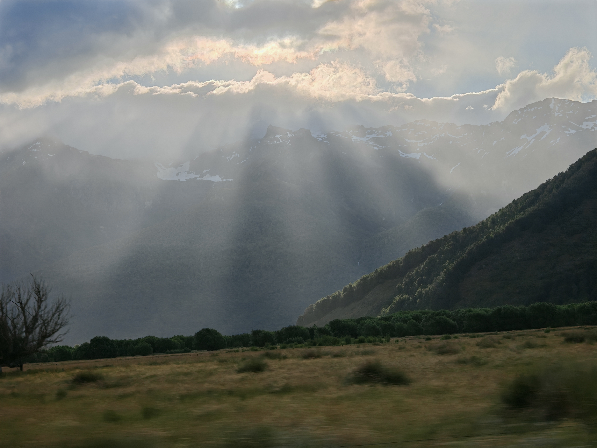
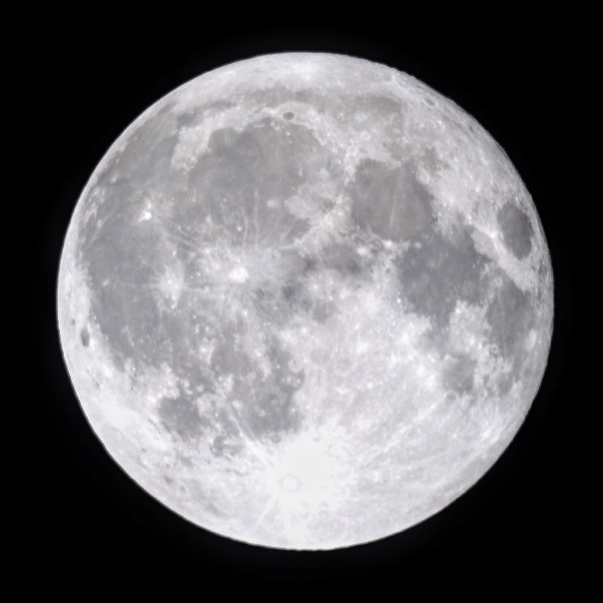
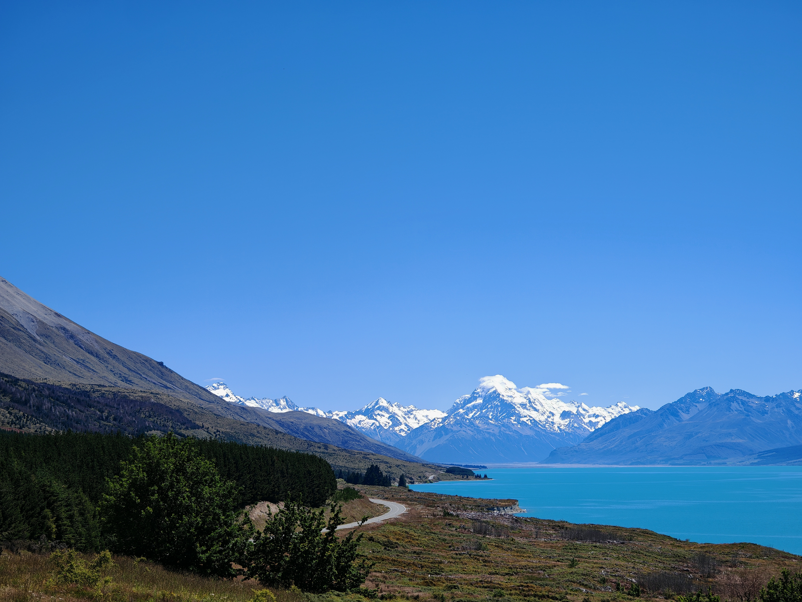

Gallery
Weekend Photo Experiments: Paradise Mist, Dobsonian Moon, and Lake Pukaki
Published
I rotate between a Fujifilm XS-20 and an Honor Magic 6 Pro. Each one nudges me toward a different pace: calm, telescope-assisted setups on the Fuji versus handheld experimentation on the Honor, including shooting through windows while the van is still moving.



I still log my settings in Notion templates because the habit keeps me honest. ISO, shutter speed, focal length, and even whether I was sprinting or strolling make their way into a table that looks a lot like an engineering runbook. The benefit: when a look works, I can recreate it on any of the cameras in the bag.
Want a physical print? Send me the frame label and I’ll drop a signed 5x7 in the mail—straight from the Fujifilm, Honor, or iPhone originals.